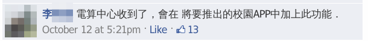
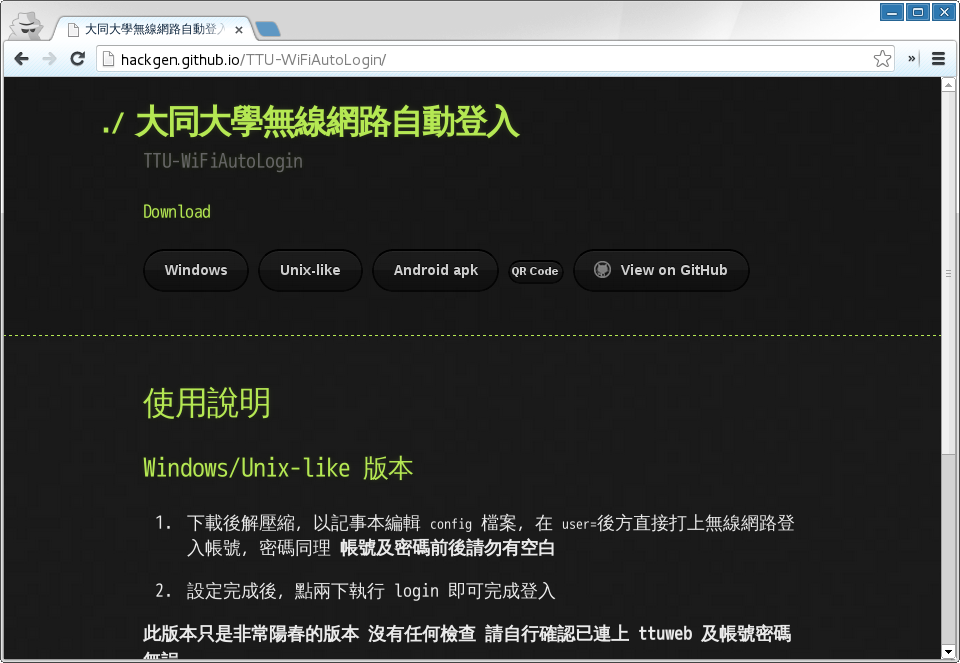
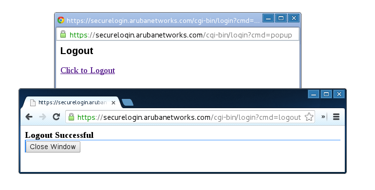
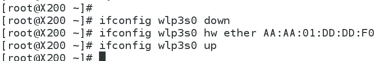
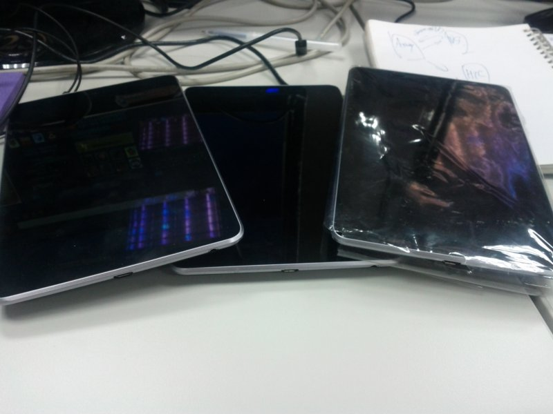
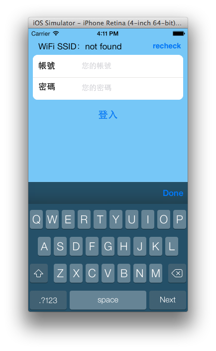
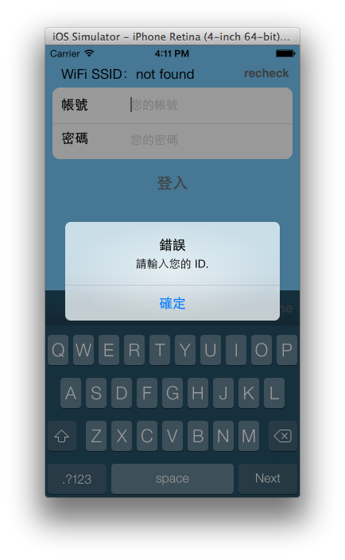
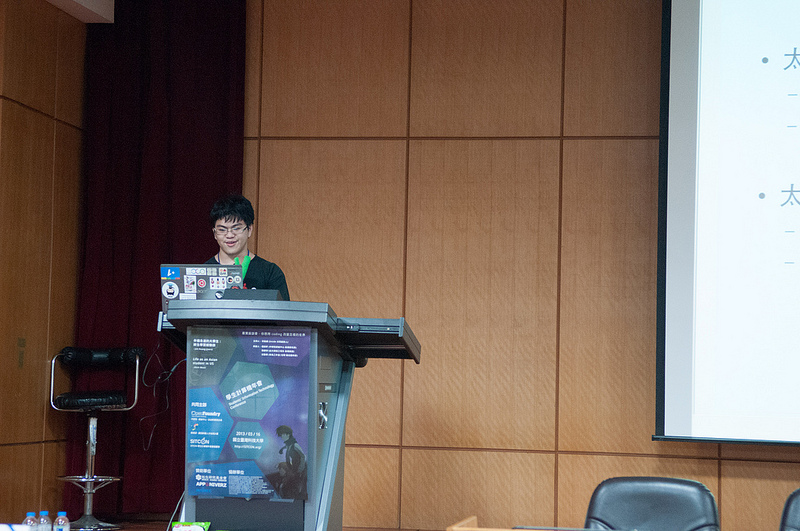
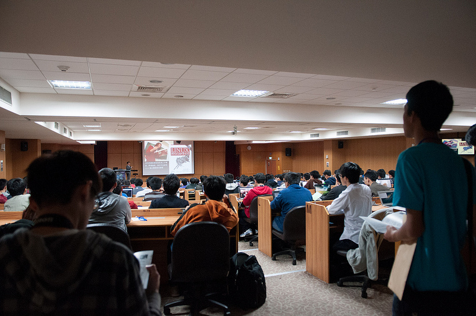
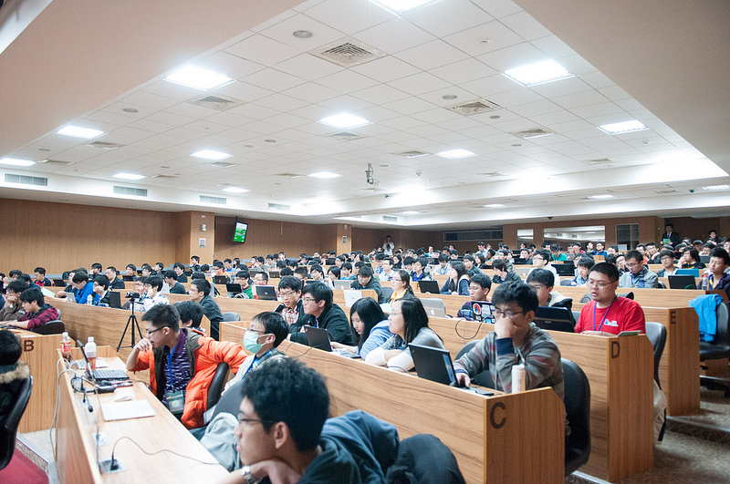

SITCON HackGen
TTU-WiFiAutoLogin
SITCON 2013, 2014 總召
Denny Huang
http://sitcon.org/
http://hackgen.sitcon.org/
緣起


http://hackgen.github.io/TTU-WiFiAutoLogin/
可使用平台
Windows / Unix-like / Android
技術原理
Shell Script
GnuWin32
困難之處...


不斷換 MAC 的悲慘世界 Orz
Android Devices

DEMO
Fork me on github
https://github.com/HackGen/TTU-WiFiAutoLogin
勤益一鍵通
/ PN Wu
 
iOS / Frank Wu
工商服務時間
SITCON 2014
2014 / 03 / 15 ＠ 中央研究院人文社會館



11 月 Call For Paper
密切注意 SITCON
FB社團
/
粉絲團
如果貴公司想要新鮮的肝
歡迎與我們聯繫
contact@sitcon.org
Thanks for listening